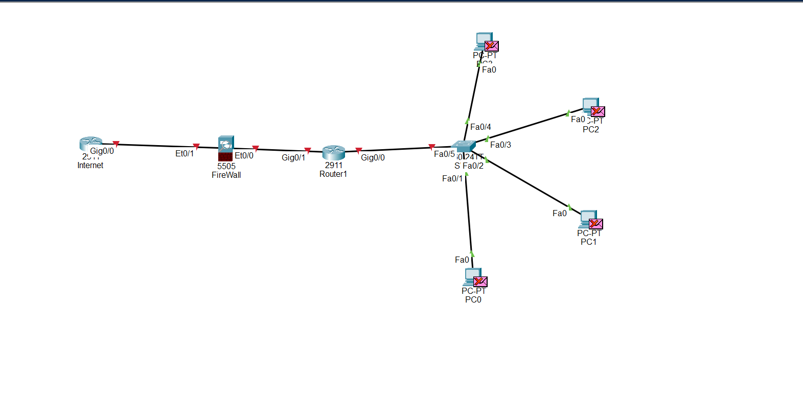

// lab documentation
Packet Tracer Network Lab
My introduction to network design using Cisco Packet Tracer — building a basic topology and understanding how core network devices connect and interact.
// overview
What I Built
A simple network layout to visualise how traffic flows from an external network into internal devices. The focus was on foundational concepts and device roles rather than deep configuration — building the mental model before adding complexity.

Basic topology: Internet → Firewall → Router → Switch → 4 PCs. This layout mirrors the perimeter structure used in real enterprise environments.
Internet → Firewall → Router → Switch → 4 PCs
// skills practiced
What I Practiced
// key outcomes
Key Learning Outcomes
This lab built a foundational understanding of how enterprise networks are structured. It sets the groundwork for future labs involving IP addressing, VLANs, routing protocols, and network services.